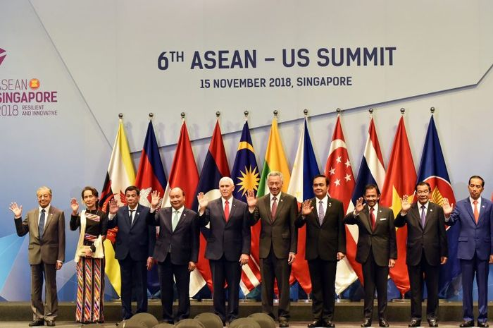
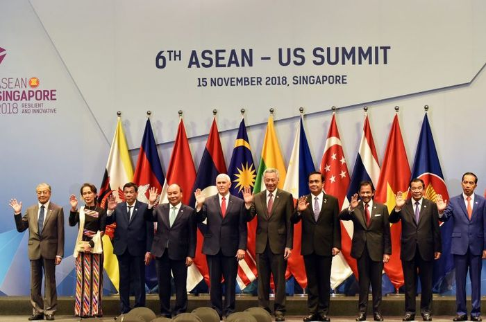

Kerja sama regional melibatkan kolaborasi antara negara-negara di suatu kawasan geografis tertentu. Biasanya, kerja sama ini bertujuan untuk meningkatkan keamanan energi, memperkuat konektivitas infrastruktur, dan mendorong transisi energi bersama.
Kerjasama regional adalah kerjasama antara negara-negara di kawasan yang melibatkan lebih dari 2 (dua) Negara. Kerjasama Sub Regional merupakan kerjasama yang mendukung percepatan pertumbuhan ekonomi di kawasan Regional. Kerjasama antar negara ini dilakukan oleh negara-negara yang berada di suatu kawasan tertentu yang biasanya berdekatan. Tujuan kerja sama regional biasanya sesuai kepentingan masing-masing negara. Namun secara umum untuk memajukan negara-negara yang berada di suatu kawasan atau wilayah. Kerja sama regional Kawasan Asia dan Pasifik diartikan sebagai bentuk kerja sama negara-negara di Asia yang meliputi Asia Tengah, Asia Timur, Asia Tenggara, Asia Selatan, dan Asia Barat; serta negara-negara di Pasifik yang meliputi Australasia, Melanesia, Mikronesia, dan Polinesia. Namun demikian, dalam perkembangannya, pengertian regional tidak saja dimaknai sebagai wilayah geografis, tetapi juga merupakan wilayah politik dan strategis.
ASEAN Power Grid (APG) adalah inisiatif untuk menghubungkan jaringan listrik di kawasan Asia Tenggara, dimulai dengan kerja sama bilateral lintas batas dan berkembang menjadi jaringan listrik terintegrasi. Proyek ini bertujuan meningkatkan perdagangan listrik antarnegara untuk memenuhi permintaan listrik yang terus meningkat serta memperluas akses energi di wilayah ASEAN. Hingga kini, enam koneksi listrik bilateral telah beroperasi, dan beberapa proyek lainnya masih dalam tahap pembangunan. Proyek APG juga membuka peluang investasi sektor swasta, termasuk transfer teknologi. Namun, pendanaan tetap menjadi tantangan, terutama bagi negara yang kurang berkembang. Dengan potensi investasi sekitar 990 miliar USD hingga 2035, keterlibatan swasta diharapkan mendukung percepatan pengembangan infrastruktur listrik ASEAN yang lebih terintegrasi.
Galeri Indonesia-ASEAN
 
